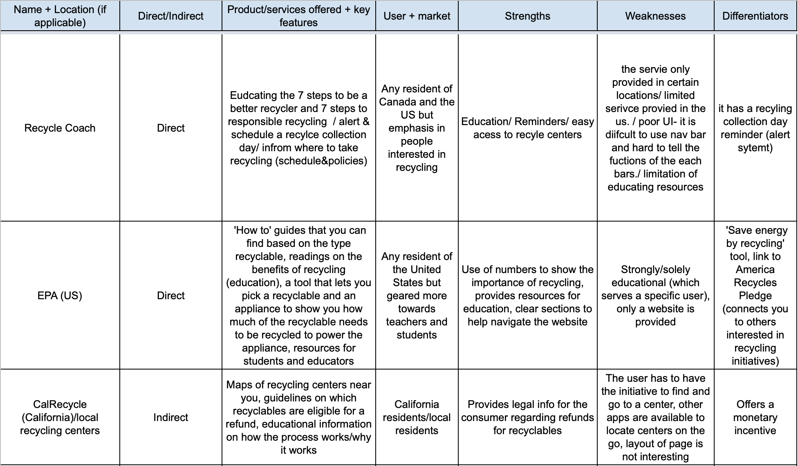
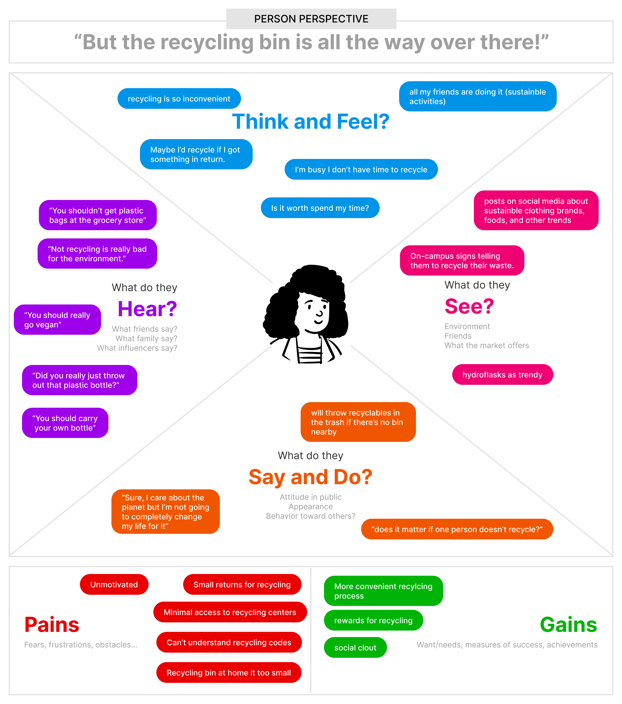
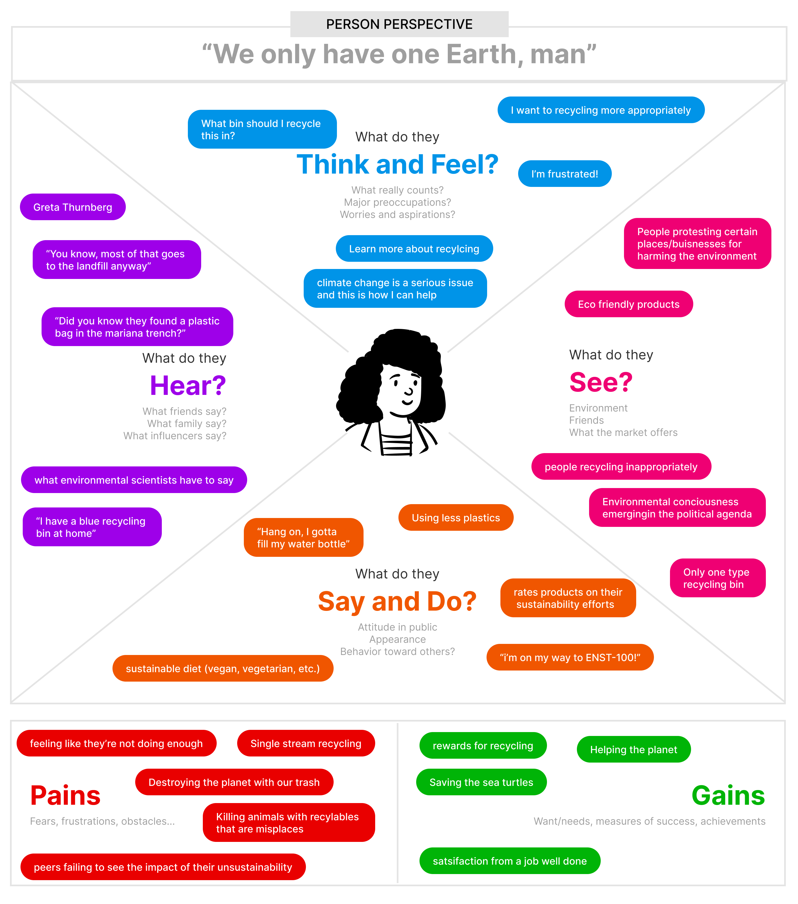
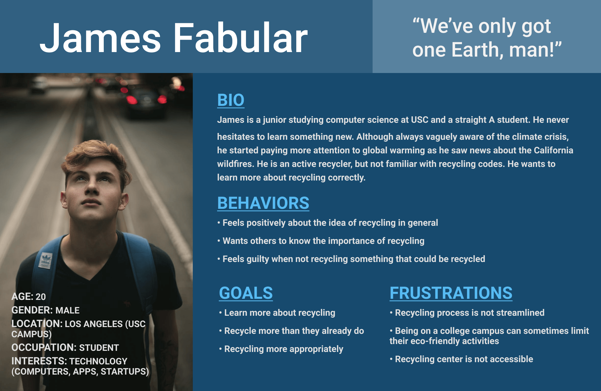
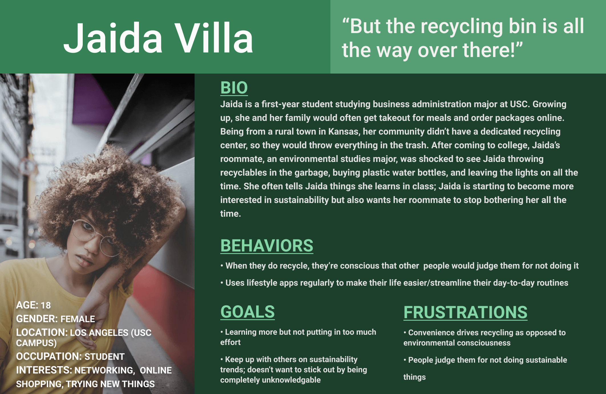
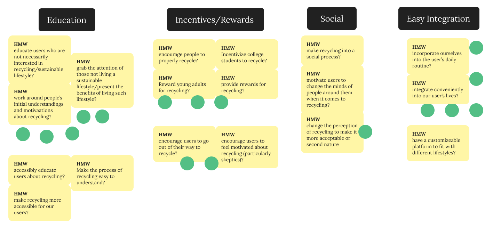
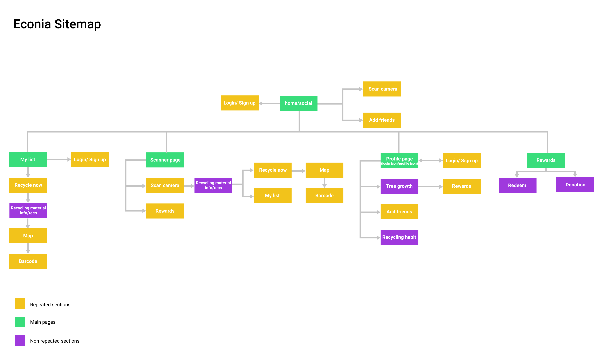
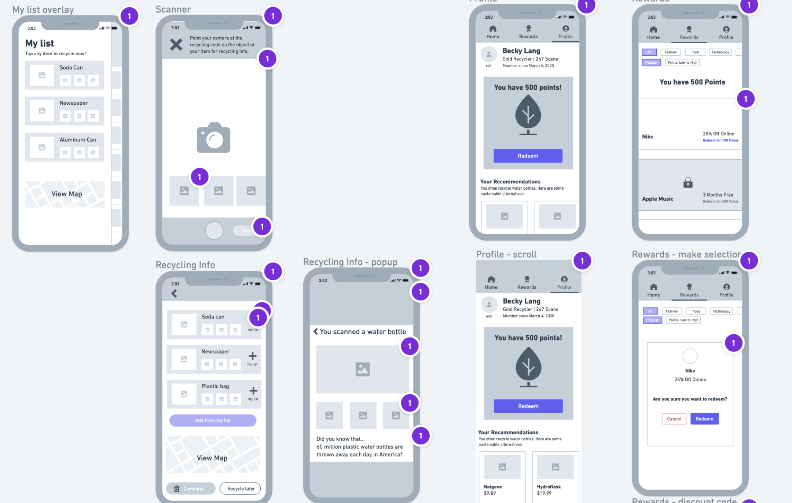
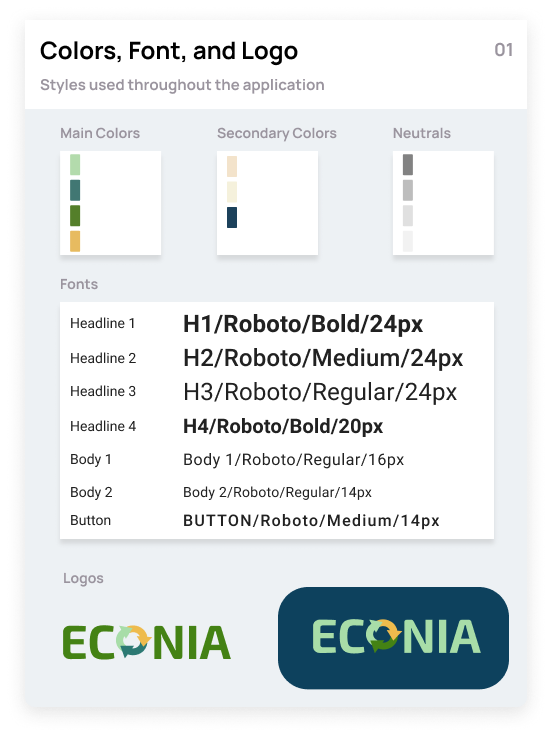

Problem: Young adults are often confused about which products to recycle and how to recycle them due to the wide range of recyclable materials and recycling parameters. As such, recyclable waste ends up in landfills instead of recycling centers.
Econia
[Short introduction].
The Rundown
Summary
A team of myself and four others crafted a native mobile application targeted at college students/young adults who recycle.
Timeline and Disciplines
August 2020 - November 2020
Design Thinking Framework, User Research, Wireframing, Design System, Prototyping, Usability Testing
The Solution
My team and I utilized the Design Thinking Framework throughout the course of one semester to create a mobile application that would simultaneously educate users and incentivize them to recycle. As such, our process involved:
- Defining the Product
- Empathizing With Target Users
- Ideating Potential Solutions
- Prototyping Solutions
- Testing Final Designs for Usability
Defining the Product
To begin, our team conducted a competitive analysis on recycling apps and sites. We discovered that existing products are great at educating users and providing local resources, as well as having enjoyable user experiences. However, they are purely educational and lack incentives to motivate users to apply their recycling knowledge.
Empathizing With Target Users
We then moved on to gaining an understanding of our target users. We believed a user survey coupled with 5 interviews would give us the best insights.
Our survey revealed:
- 71% of respondents reported having a very positive attitude towards recycling, but only 28% felt like their knowledge of recycling was extensive.
- 92% reported receiving no compensation for recycling, but a majority (69%) said they would recycle more if they received something in return.
- Over half (57%) said they never pay attention to codes on products when recycling.
Our one-on-one interviews taught us that young adults are:
- Often influenced by peer pressure to recycle more.
- Enthusiastic about sustainable/reusable alternatives to products they commonly recycle.
- Interested in lifestyle apps that help them with their daily routines.
Using our competitive analysis and research, we decided it was imperative for our product to further educate users on recyclable products and the recycling process. We would also need to provide healthy peer pressure and relevant incentives for participating.
From there, we completed empathy maps and personas for our 2 main types of users. Our primary user was a young adult who greatly favors recycling but believes the process is not streamlined enough. Our secondary user felt indifferent towards recycling but does it out of convenience and peer pressure.
   Ideating Potential Solutions
Our ideation process started with us proposing "How Might We?" questions and dot-mapping which ones we felt best about.
From there, we conducted a Crazy 8s sketching session and heat-mapped those as well. My team took very well to my suggestions of a profile page and showing a user's reward status on the screen after they complete a recycle.
Prototyping Final Solutions
Before prototying, we constructed a sitemap and preliminary wireframes of our application.
 I then put everything together. As aforementioned, the two main actions I focused on were editing a message and viewing message edits. I made sure both processes involved similar steps to other message interactions to prevent unnecessarily increasing cognitive load.
Editing A Message
To edit a message, users would select the edit feature from the long-press dropdown and send their edits as they would a reply.
Showing the original message while preparing edits prevents users from making any additional errors (by being able to see what was written the first time).
Making the "Send" button yellow tells users that they are about to edit a message, not reply to it.
Viewing Message Edits
To view edits made to a message, users would click on the yellow “edited” icon in the bottom left corner of the message (like clicking on a tapback response). They would then see the original message as well as the edits made to it.
Putting the "edited" indicator in the bottom corner lets users know it is something different than the Tapback reactions.
Viewing Message Edits
To view edits made to a message, users would click on the yellow “edited” icon in the bottom left corner of the message (like clicking on a tapback response). They would then see the original message as well as the edits made to it.
Putting the "edited" indicator in the bottom corner lets users know it is something different than the Tapback reactions.
Testing Our Solutions
We conducted 5 usability tests through observation and interviewing, which ultimately taught us:
- Clear iconography is important. 3 of our participants thought our icons were confusing.
- User onboarding is highly valuable. Participants expressed they would have been more comfortable navigating the application if they completed onboarding first.
The Rewards section of our app was well-received, as were the educational tips and recyclable product recommendations. Overall, test users appreciated the mission behind the app and said they would use it after further development.
Reflecting
This project was an excellent exercise in utilizing the Design Thinking Framework, as well as applying principles of user interface design and working on a team. I particularly enjoyed conducting user research to gain insights about target users and contributing to a design system.
Although the product will not move into a development phase, I believe the entire team gained valuable knowledge about young adults and our relationship to recycling.